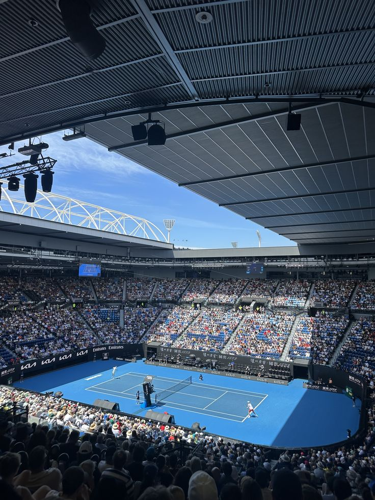
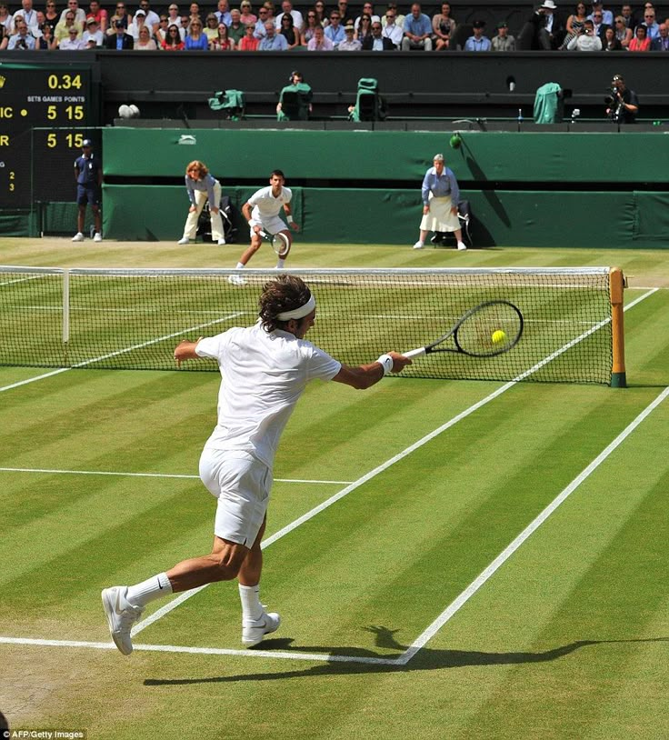
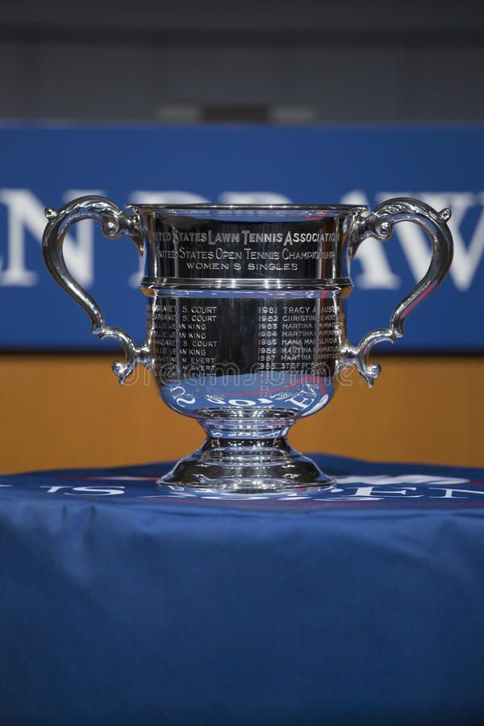

Les 4 Grands Chelems / Tournois







Ce tournoi est le premier Grand Chelem de l’année et se déroule chaque mois de janvier à Melbourne, en Australie. Il se joue sur une surface dure appelée hard court. L’Australian Open est connu pour son ambiance très festive et ses températures parfois très élevées. Les matchs peuvent se dérouler de jour comme de nuit dans de grands stades modernes équipés de toits rétractables.
Wimbledon est le tournoi le plus ancien et l’un des plus prestigieux du tennis. Il se déroule à Londres au Royaume-Uni, généralement entre juin et juillet. Les matchs se jouent sur gazon, une surface rapide qui favorise les joueurs offensifs. Wimbledon est également connu pour ses nombreuses traditions, comme la tenue blanche obligatoire pour les joueurs.
Wimbledon est le tournoi le plus ancien et l’un des plus prestigieux du tennis . Il se déroule à Londres au Royaume-Uni, généralement entre juin et juillet. Les matchs se jouent sur gazon, une surface rapide qui favorise les joueurs offensifs. Wimbledon est également connu pour ses nombreuses traditions, comme la tenue blanche obligatoire pour les joueurs
L’US Open est le dernier Grand Chelem de la saison et se déroule à New York entre août et septembre. Comme l’Australian Open, il se joue sur une surface dure. Ce tournoi est célèbre pour son atmosphère très dynamique et son public très enthousiaste. Les matchs nocturnes y sont particulièrement spectaculaires..